O problema
O acompanhamento do evento de substituição temporária é feito em uma planilha de Excel e em processos do SIGADOC. Cada etapa depende de uma pessoa lembrar de encaminhar o processo, e o prazo do dia 05 é conferido manualmente.
A unidade abre o ofício no SIGADOC; as autorizações sobem a linha hierárquica; o Gabinete encaminha ao RH; o RH inclui a ficha, coleta a assinatura do Diretor Geral Adjunto e envia à SESP. O controle paralelo é uma planilha com as cores amarelo, azul e verde.
O processo pode chegar à SESP depois do dia 05 e ser indeferido. Sem uma visão única, não se sabe em que etapa cada evento está nem quem precisa agir.
AS-IS · o processo antes do MVP
O caminho real, com quem faz, o que entra, onde espera e o que é automatizável. Fonte: tabela AS-IS do projeto.

Fluxograma AS-IS · amarelo: etapa manual; tracejado: ponto de espera. Os números correspondem à tabela. Fonte Mermaid.
| Etapa | Quem faz | Entra | Ação | Sai | Sistema | Regra | Onde espera | Tempo | Automatizável |
|---|---|---|---|---|---|---|---|---|---|
| Abertura do ofício | Unidade do gestor afastado | Demanda de afastamento | Abre o processo no SIGADOC por ofício, indica o substituto e o motivo | Processo autuado | SIGADOC | RN01 e RN02 | Fila da unidade | 1 dia | Parcial |
| Autorização hierárquica | Chefias da linha | Processo com o ofício | Cada gestor responsável analisa e autoriza | Autorizações registradas | SIGADOC | RN03 | Agenda de cada chefia | 3 a 10 dias | Sim |
| Envio ao Gabinete | Unidade | Processo autorizado | Encaminha o processo ao Gabinete de Direção | Processo no Gabinete | SIGADOC | RN03 | Fila do Gabinete | 1 dia | Sim |
| Análise de RH | Gerência de Suporte à Gestão de Pessoas | Processo no Gabinete | Analisa a demanda e inclui a ficha de solicitação | Ficha anexada | SIGADOC e Word | RN04 | Fila do RH | 2 a 5 dias | Parcial |
| Assinatura | Diretor Geral Adjunto | Processo com a ficha | Analisa e assina | Processo assinado | SIGADOC | RN05 | Agenda do diretor | 1 a 7 dias | Não |
| Envio à SESP | Gerência de Suporte à Gestão de Pessoas | Processo assinado | Encaminha à Superintendência de Gestão de Pessoas da SESP | Processo na SESP | SIGADOC | RN06 | Conferência do prazo | 1 dia | Sim |
| Acompanhamento na planilha | Gerência de Suporte à Gestão de Pessoas | Dados do processo | Registra os dados e acompanha o andamento | Planilha de controle | Excel | RN08 | Conferência manual | Contínuo | Sim |
| Publicação no Diário Oficial | SESP e Diário Oficial | Processo na SESP | Publica a substituição e informa o número da publicação | Evento encerrado | DO e Excel | RN07 | Fila do Diário Oficial | 5 a 30 dias | Parcial |
TO-BE · o processo com o MVP
O que muda em cada etapa, quem passa a fazer e o ganho esperado. Fonte: tabela TO-BE do projeto.

Fluxograma TO-BE · verde: máquina (automação local); azul: pessoa (fé pública). Fonte Mermaid.
Quando o app existir, cada perfil vê a sua fila com a etapa e o prazo. O evento só avança quando a etapa anterior termina, o envio à SESP é bloqueado depois do dia 05 e o encerramento só acontece com a publicação no Diário Oficial.
- Abertura do ofício
O app valida o motivo, o substituto e o período antes de registrar
UnidadeMenos devolução - Autorização hierárquica
Cada chefia vê a sua fila e o que falta para o evento seguir
ChefiasAutorização rastreável - Envio ao Gabinete
O evento avança sozinho quando todas as autorizações terminam
Chefias e appMenos espera - Análise de RH
A ficha nasce com os dados do evento e é anexada em um clique
Gerência de Suporte à Gestão de PessoasFicha padronizada - Assinatura
O diretor vê uma fila única do que está pronto para assinar
Diretor Geral AdjuntoFila única - Envio à SESP
O app bloqueia o envio depois do dia 05 e registra a data
Gerência de Suporte à Gestão de PessoasFim do indeferimento por esquecimento - Acompanhamento
A planilha é uma visão do app, com CSV e os cinco campos obrigatórios
Gerência de Suporte à Gestão de PessoasControle sem redigitação - Publicação no Diário Oficial
O evento só encerra com o número e a data da publicação
Gerência de Suporte à Gestão de PessoasEncerramento correto
| Etapa | O que muda | Quem faz | Benefício | Esforço |
|---|---|---|---|---|
| Abertura do ofício | O app valida o motivo, o substituto e o período antes de registrar | Unidade | Menos devolução | Baixo |
| Autorização hierárquica | Cada chefia vê a sua fila e o que falta para o evento seguir | Chefias | Autorização rastreável | Baixo |
| Envio ao Gabinete | O evento avança sozinho quando todas as autorizações terminam | Chefias e app | Menos espera | Baixo |
| Análise de RH | A ficha nasce com os dados do evento e é anexada em um clique | Gerência de Suporte à Gestão de Pessoas | Ficha padronizada | Médio |
| Assinatura | O diretor vê uma fila única do que está pronto para assinar | Diretor Geral Adjunto | Fila única | Baixo |
| Envio à SESP | O app bloqueia o envio depois do dia 05 e registra a data | Gerência de Suporte à Gestão de Pessoas | Fim do indeferimento por esquecimento | Baixo |
| Acompanhamento | A planilha é uma visão do app, com CSV e os cinco campos obrigatórios | Gerência de Suporte à Gestão de Pessoas | Controle sem redigitação | Médio |
| Publicação no Diário Oficial | O evento só encerra com o número e a data da publicação | Gerência de Suporte à Gestão de Pessoas | Encerramento correto | Baixo |
O que o MVP entrega
Tela-assinatura: Minha fila em trilho: o que espera cada perfil, com a etapa e o prazo do dia 05.
Menu do MVP: PainelEventosNovo eventoMinha filaPlanilha de controleConfiguração
Regras de negócio
| ID | Regra | Quando | Tipo | Exceção |
|---|---|---|---|---|
RN01 | O motivo precisa ser férias, licença prêmio, licença para tratamento da própria saúde ou licença para acompanhar pessoa da família | Na abertura do evento | Obrigatória | Nenhuma |
RN02 | O substituto precisa ser informado e não pode ser o próprio gestor substituído | Na abertura do evento | Obrigatória | Nenhuma |
RN03 | O evento só chega ao Gabinete depois de todas as autorizações da linha hierárquica | Na tramitação | Obrigatória | Devolução para ajuste |
RN04 | A ficha de solicitação é incluída pelo RH antes da assinatura | Na análise de RH | Obrigatória | Nenhuma |
RN05 | A assinatura é do Diretor Geral Adjunto | Depois da ficha | Obrigatória | Nenhuma |
RN06 | O envio à SESP precisa acontecer até o dia 05 do mês em que a substituição ocorre; depois da data, o evento é indeferido | No envio à SESP | Obrigatória | Nenhuma |
RN07 | O evento só é encerrado com a publicação no Diário Oficial | No encerramento | Obrigatória | Indeferimento |
RN08 | A planilha de controle tem substituído, substituto, motivo, período e publicação no Diário Oficial | No acompanhamento | Obrigatória | Nenhuma |
Papéis
| Papel | Quem é | O que vê | O que faz | O que não faz | Registro |
|---|---|---|---|---|---|
| Unidade solicitante | Servidor da unidade do gestor afastado | Os eventos da unidade e os devolvidos | Abre o ofício, indica o substituto e o motivo, reenvia depois do ajuste | Autoriza, assina ou publica | Ofício e trilha |
| Gestor hierárquico | Chefias da linha hierárquica | A fila de autorização | Autoriza ou devolve o evento | Inclui a ficha ou assina | Autorização por nível |
| Gabinete de Direção | Servidor do Gabinete | Os eventos autorizados | Encaminha o evento ao RH | Autoriza, assina ou publica | Encaminhamento ao RH |
| Gerência de Suporte à Gestão de Pessoas | Analista de RH | Análise, envio à SESP e publicação | Inclui a ficha, envia à SESP, registra a publicação e mantém a planilha | Autoriza ou assina | Ficha, envio e publicação |
| Diretor Geral Adjunto | Diretor Geral Adjunto | A fila de assinatura | Assina o evento | Abre o ofício, inclui a ficha ou publica | Assinatura |
Métricas do piloto
Como testar
O MVP é um `index.html` offline, com dados fictícios. Abra index.html.
cd Apps/evento-substituicao-temporaria python construir.py python testes/testar.py python testes/cenarios.py python testes/jornada.py # Lightpanda (via WSL, CDP em 9222 e HTTP em 8000) python testes/jornada.py --cdp http://127.0.0.1:9222 --base http://127.0.0.1:8000
Documentos: PROJETO.md · sprint.md · README.md